Let's Bike！
因為必須在下午一點半左右騎回台北，希望可以早到，盡量不要遲到，以現在距離台北的距離來講，天亮就出發是比較保險的。
五點天還沒亮的時候，姨丈就來叫我起床，睡到連眼睛都睜不開，但也不敢再賴下去。
吃過地瓜籤稀飯，本來吃完乾糧的包包又裝滿了各式各樣的餅乾。
宜蘭的家人和鄰居都很可愛，其實大家對『北京到巴黎』是沒什麼概念的，地理相對位置以及距離，都是連輪廓都稱不上的印象。
只知道我又出國騎了好遠的腳踏車，騎到上電視新聞，然後又騎回宜蘭來，大家應該覺得我騎太多車了，工作都不認真做。-.-
六點不到就騎車出發，這次停留真是來去匆匆，距離上次回家已經是半年前的事情了。
介紹一個旅行中安靜的夥伴，鐺鐺～很娘的小錢包，這次旅行的花費，不論是紙鈔還是硬幣，全部都裝在這裡面。
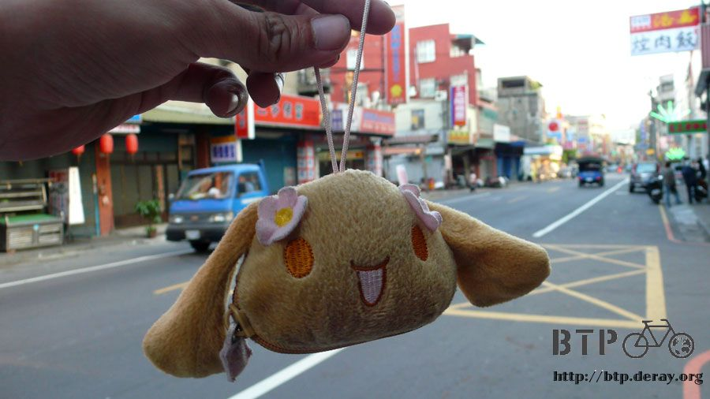
本來想把它綁在車頭上，這樣我的車也有可愛的布娃娃，可是想到很快就會弄髒，所以還是小心翼翼的收起來比較保險。
出發之後沒有立刻急著騎車，先去二結王公廟跟王公說我回來了。
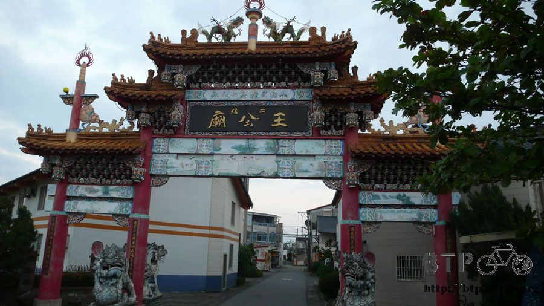
出發前，阿姨就是在這間廟幫我求了一個平安符，本來是要掛在脖子上，但是旅行太容易流汗，會沾濕掛符然後發霉。
所以一直都是收納在行李中，一路上也度過很多可大可小的事件，沒有生大病、沒有出車禍，平平安安的一個人騎了一百多天的腳踏車。
王公廟現在正在重建，依照建廟的速度，至少還要再三十年以上才有可能蓋的出來。
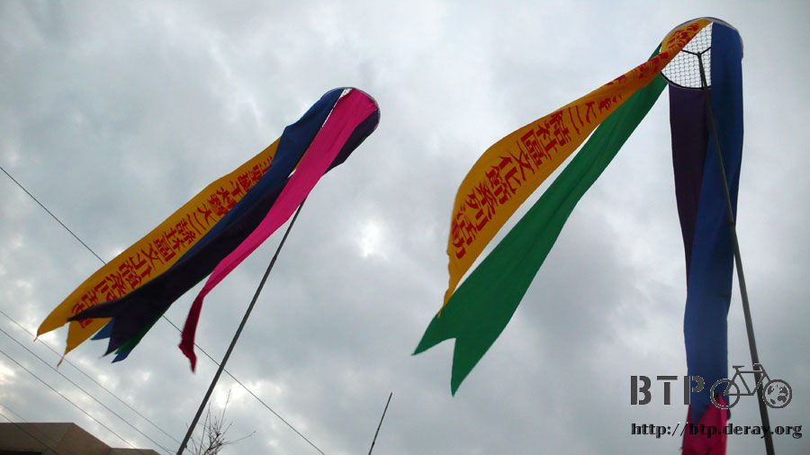
這一棟舊廟，在我小的時候它還是正常使用的狀態，應該大約十年前，二結的鄉親決定蓋一座新廟。
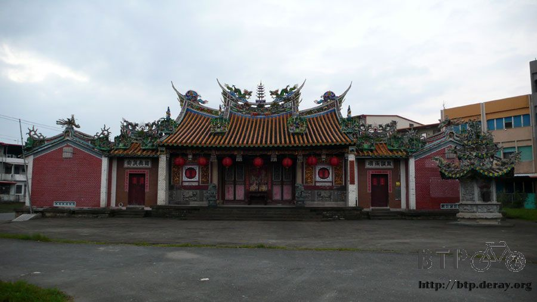
所以將舊廟地基打掉，整座廟騰空，然後當地的居民以手動的方式，像萬人拔河一樣用幾百條繩子一起拉，親手將廟給遷移位置。
就這麼的，寺廟從原本的位置往前移了幾百公尺，然後一百八十度迴轉，放在現在的地方，門也都關起來了，只能從外觀去想以前的點滴。
原本舊廟的位置，就大興土木的建起了新廟，這幾年來，光是打地基，蓋地下室，就弄個沒完，直到今天還是沒看見有地上建築的輪廓。
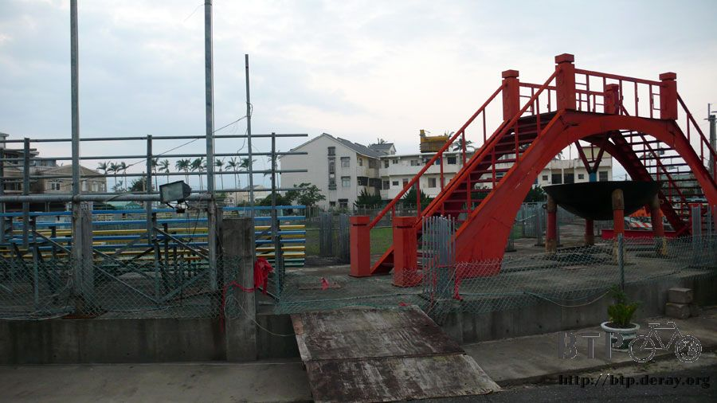
寺廟的建設經費來自香客添的香油錢，一磚一瓦都是靠這些錢累積才有辦法興建。
所以工程就是蓋蓋停停，有錢的時候才動工，沒錢就停工，讓工地日曬雨淋。
每年過年都覺得，怎麼跟去年的進度沒兩樣？如果這蓋的是商業大樓，這幾年早就可以蓋出不知道多少棟來。
但是蓋廟就完全不是這麼一回事，沒有雄厚的財力支撐，光靠當地人和外來香客的小額奉獻，也許三十年要蓋完，還算估計的太淺了。
舊廟停止使用，新廟落成遙遙無期，那想拜拜的民眾怎麼辦呢？
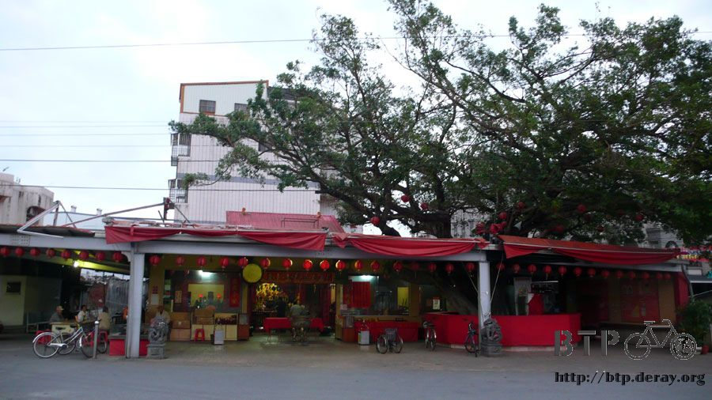
答案是這個臨時搭建的棚架，簡單的棚架，將神明給請進來，沒有富麗的內裝，反而有種落難的感覺。
臨時寺廟的所在位置有一棵好幾十年的大樹，這個地方在我很小的時候可是一間托兒所，我還完整的唸過小中大班。
拿出當時阿姨求的平安符，來跟王公說謝謝，謝謝他一路保佑我的平安，現在我回來了，而且是平安的回來。
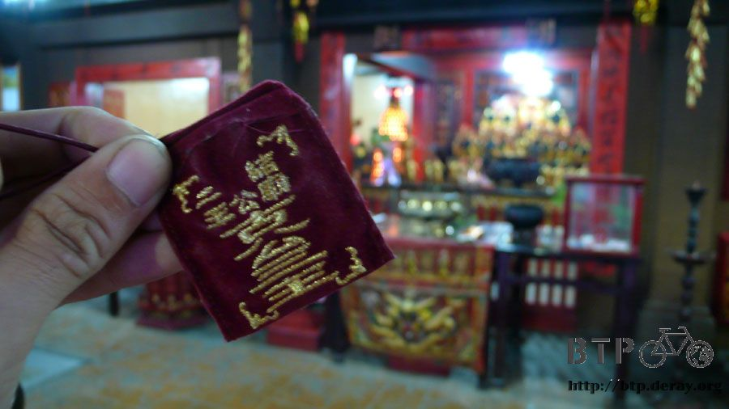
雙手合十，默默講了幾句話，平安符在香爐上繞了幾圈，添一點香油錢，這邊對我來說，與其說是寺廟，不如說是記憶中的一個環節。
小時候牽著大人的手，跟著去拜拜的情形，煙霧瀰漫的內廳，供桌上琳瑯滿目的雞鴨水果，火焰熊熊的燒金香爐，和要掩著耳朵的鞭炮聲...
也許記憶本身並不可靠，但有記憶可以回想，作為自己存在過的證據，作為自己未來前進的動力，就算不可靠又如何呢？
拜拜完之後開始騎車，從二結騎到宜蘭就有一小段路，然後還要騎到礁溪，接著才能爬北宜公路。
這條是蘭陽大橋，在我很小的時候它只有右半邊那一條舊橋，雙向單線道，之後又在隔壁蓋了一座新的，雙向八線道。
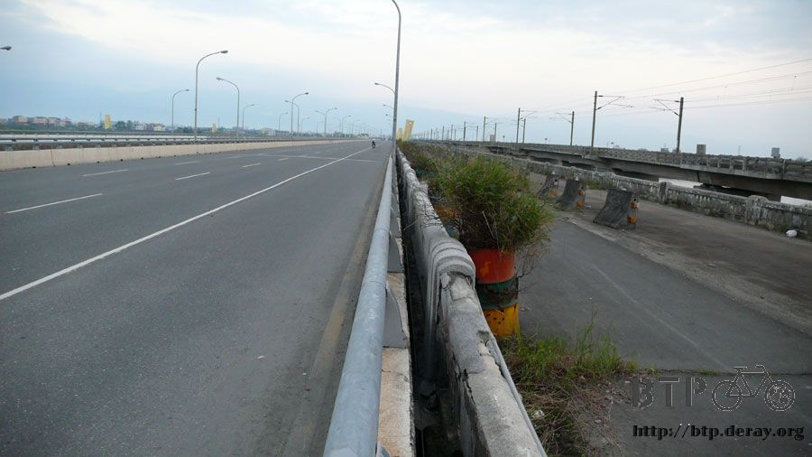
本來的舊橋一開始說要規劃成自行車道，所以一直沒有拆掉，就這麼樣的，讓舊橋得以被保留下來。
下橋的時候看見的，不過是一片摟空的咖啡色鐵板，但作的實在太漂亮了。
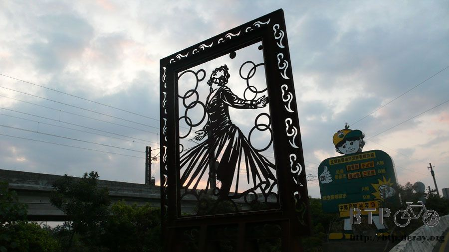
因為雪山隧道通車的緣故，好的和壞的東西都以倍數湧進這片本來是很安靜的蘭陽平原。
以前小小的蘇澳漁港，海鮮很好吃，而且又便宜，觀光客來了之後，價錢莫名其妙的一直漲，吃東西也要排隊，還得忍受惡化的交通。
本來淳樸的鄉鎮，也因為情色行業的轉移，讓這個生活滿意度最高的地方，開始走下坡。
商人無祖國，哪裡有錢賺就往哪去，賺錢的往往也是外來的投資客，不斷消耗這塊土地美麗的同時，誰又考慮過當地人生活的感受。
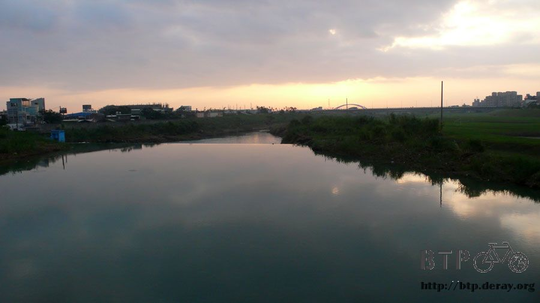
騎到宜蘭已經快七點了，這邊的學生上學分三派，搭班次一直被修改的電車、搭很難等的公車、以及自己騎腳踏車。
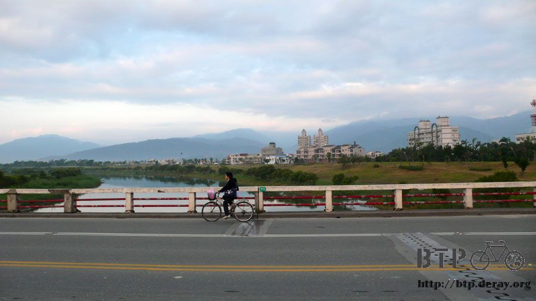
很快的經過宜蘭，繼續往前就是礁溪，滿街都是溫泉旅館、泡湯住宿，絕對不可能不知道自己正在經過溫泉鄉。
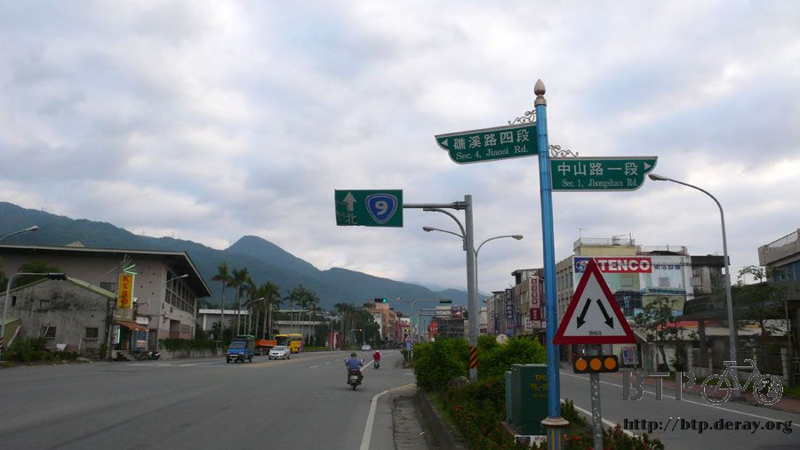
這些就不多贅述，繼續趁著涼快的天候騎車，騎到這個路口就是一個三叉的分歧點。
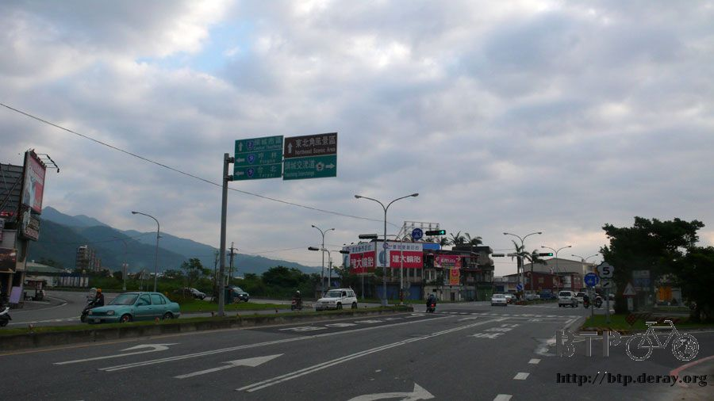
往左是台九線，也就是北宜公路，直走是台二線，也就是濱海公路，右轉是五號國道，也就是雪山隧道。
那就騎北宜吧，雖然要爬山，但是距離相對比較近，這樣才有可能在下午一點半左右騎回台北。
跟蘇花一樣，這也是第一次從南往北騎，反過來騎比較硬，一進入北宜馬上就是九彎十八拐，一口氣要爬五百公尺的上坡。
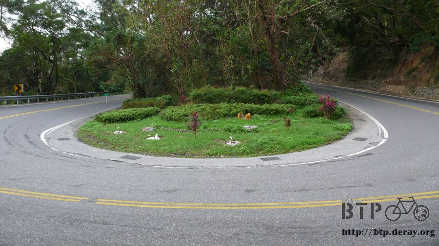
每一個彎道都是超級髮夾彎，每一個坡度都陡峭到不行，還好天氣涼快，不然爬這種山路很可能又要抽筋了。
慢慢往上爬高之後，就可以鳥瞰蘭陽平原，海上那個影子就是龜山島，宜蘭直到今天還是有很多的水稻田，市區和鄉村並存得毫無衝突。
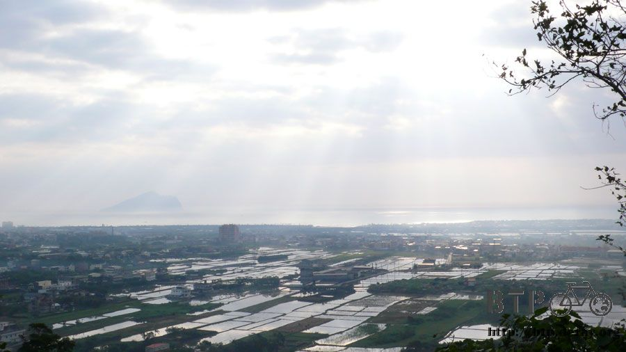
每爬一個彎基本上就要休息喘氣個一分鐘，然後繼續爬下一個彎，上次是用滑的下來，沒想過爬上來是什麼感受，現在就可以體會到了。
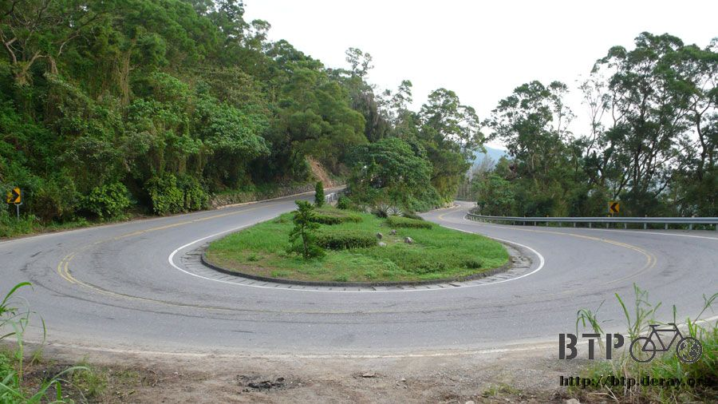
比較蘇花跟北宜，其實北宜也不見得好騎到哪，爬坡的高度也比較高，但景色沒有蘇花那麼多采多姿，也少了隧道跟砂石車的震撼教育。
高度又爬升了一點，記憶中蘇花很難騎，所以昨天輕鬆騎完讓我有點訝異，相對的，印象中北宜很好騎，結果今天才發現根本就是個難關。
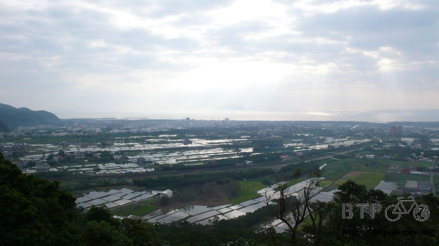
大概也是前幾次颱風搞的鬼，沿著馬路的大樹，根部的土都被沖刷殆盡，真擔心會不會就這麼傾斜垮了下來。
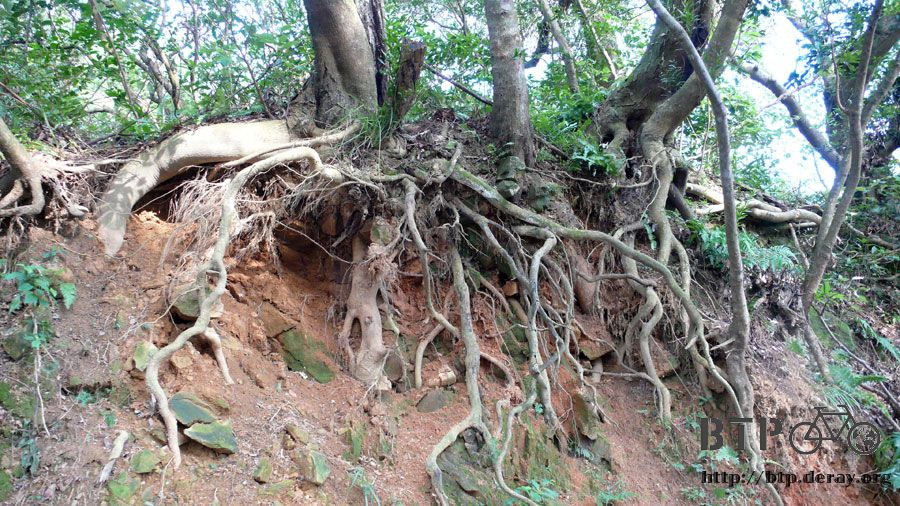
路斷掉會有人修理，樹木受傷都沒人理會，你們要好好的撐下去呀～加油
目前還是在九彎十八拐當中，小時候搭汽車走北宜，十次我會吐十次，彎彎曲曲的道路讓人腦袋暈眩。
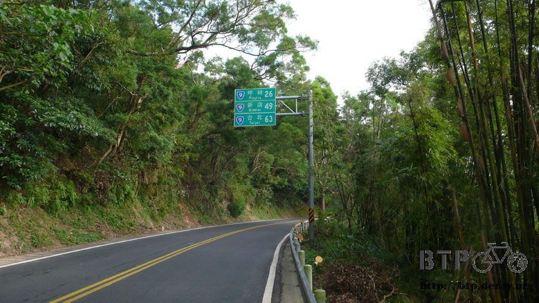
自己騎車之後才擺脫這個陰影，原來跟打電動一樣，人要跟著車子轉彎，這樣才不會覺得噁心。
距離台北還有六十三公里，這其中有五十公里都是在山裡。
北宜的休息點比蘇花少一些，從礁溪開始，到新店為止，中間就只有一個坪林可以休息吃飯。
這種是叢生的竹子，以前我以為竹子都是一根一根的分開長，後來才知道也有這種一叢一叢的，怕壓迫到對方的緣故，叢生的竹子都很細小。
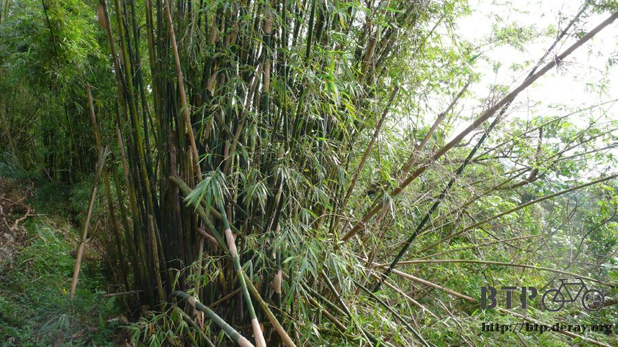
但好像要一根一根的竹子才會有好吃的竹筍可以挖來吃。
這邊就差不多是可以鳥瞰蘭陽平原的最高點了，水田的美麗和綠意盎然的家鄉，要是哪一天這片景色都變成水泥叢林，我真的會哭。
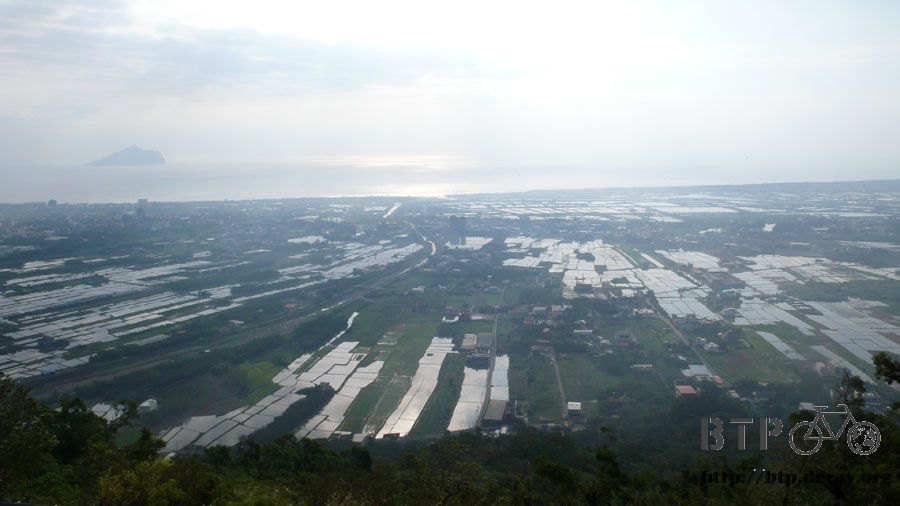
停在最高速的護欄休息片刻，可以爬到這裡很了不起了，一整天的運動量已經完全足夠，接下來全都是下坡，直達坪林。
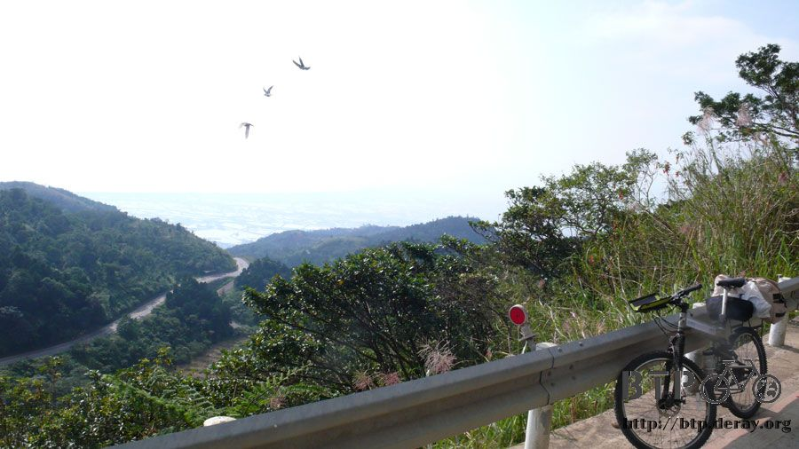
喘息的時候有人在放鴿子，打開鴿籠的瞬間，鳥就啪～飛出，好像在逃命一樣。
問了大叔是不是在放生？結果是在訓練賽鴿，從這邊要飛回桃園。
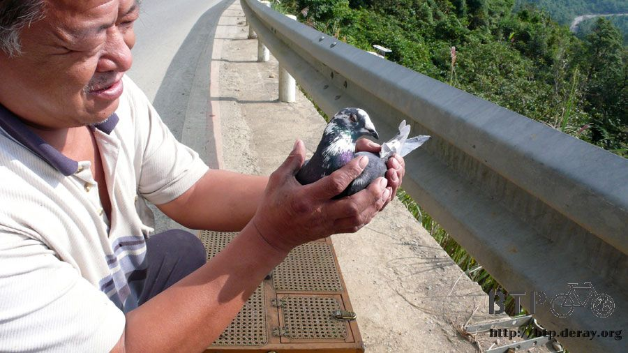
大家應該都想問一個問題『萬一不見了，沒有飛回來怎麼辦？』
答案是，不見就算了，表示這個賽鴿不是好賽鴿。
那你，想當追求別人給予的責任，成為別人眼中的高手，當一隻好賽鴿；或是在打開鴿籠的同時，飛的不知去向，變成自由飛翔的鴿子。
前者得到的是主人的讚賞，社會期待和鼓勵，後者是自己想過的生活，但會被批評為，不是一隻好賽鴿。
可是，誰說鴿子生來就是要被拿來比賽用的呢？
人也是呀。
第一個最高點是簡單的鐵皮屋休息站，這邊有賣好吃的茶葉蛋，但不知道是來的時間早了，還是已經沒落到大家都歇業關門。
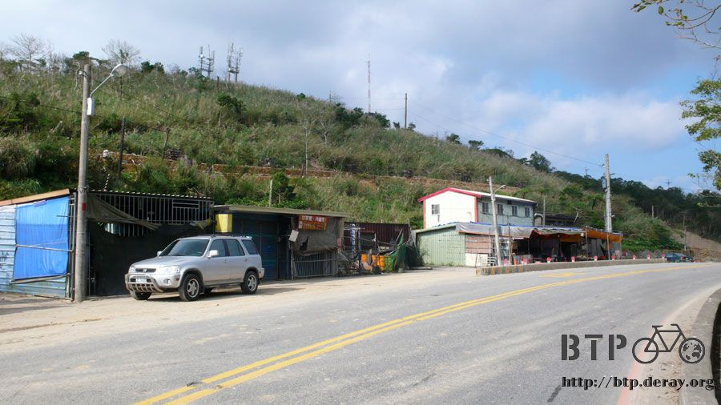
相較於鐵皮屋的餐廳，公共廁所則很高級，洗把臉平復一下澎湃的心跳，早知道出發就去買份報紙邊騎邊看，現在就不會那麼累。
店家賣的水果和醃漬品，都是我所不知道的宜蘭產物，連佛手(右下角)都有，這些到底是從哪邊拿來賣的=.="
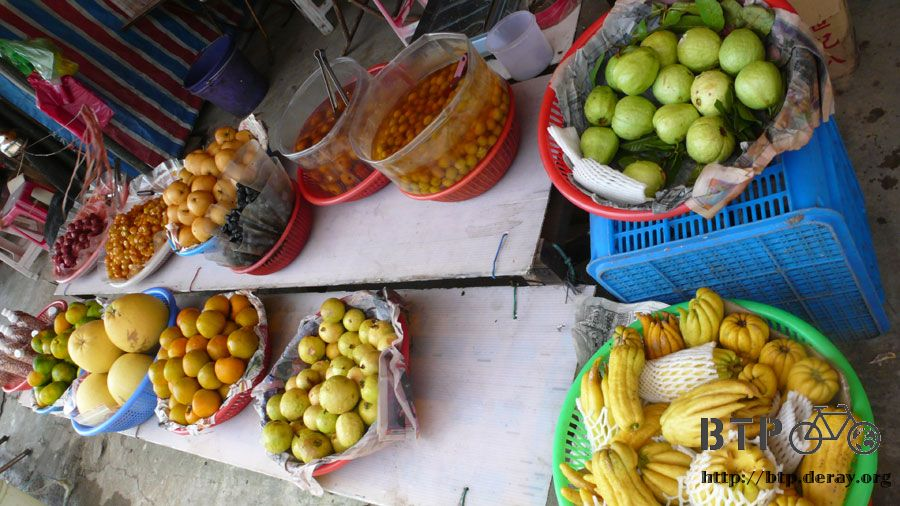
本來就知道蘇花公路有災情，所以騎車還有點勘災的味道，殊不知連北宜也遭殃，跟蘇花一樣有兩段路都塌陷了。
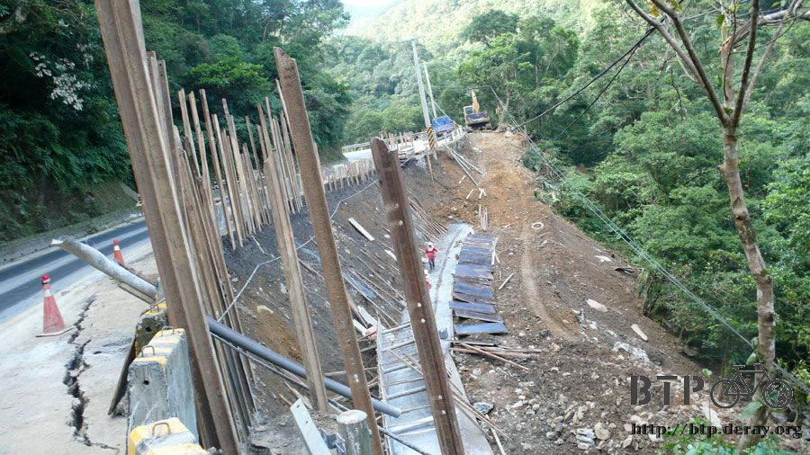
還好砂石車在這段路都去跑濱海公路，加上雪隧通車的緣故，北宜現在車流超少，快要變成重機的天堂。
(我本來想講自行車的天堂，但爬坡騎車騎的這麼累，跟天堂平靜享樂的感覺很不搭嘎。)
因為車流量少了，這沿路的景色都慢慢的恢復原有的景觀，綠樹的葉子少了層灰覆蓋，涓涓的細水也清澈無瑕。
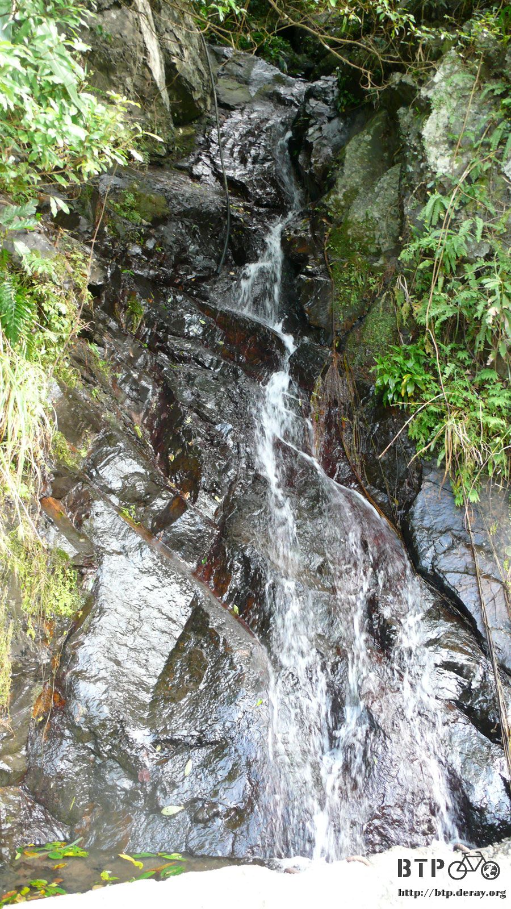
這是第二段的崩塌，靠山的地方落下山土，將路面整個給埋掉，清理完土石之後才變成單線通車。
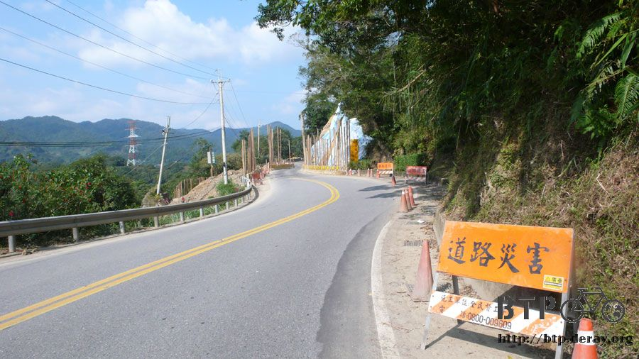
還好不是因為路基垮掉，稍微比較好修復一點，我很喜歡北宜呀～千萬不要像中橫那樣斷的無法重建。
除了這兩段小災情，北宜還是那麼美麗，而且這一路都是下坡，直達山中的坪林。
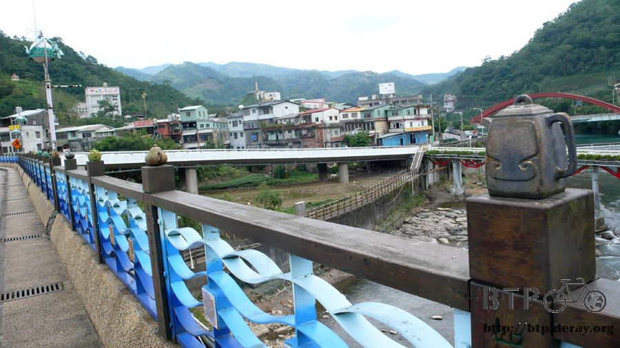
坪林的這座橋樑，用各式各樣的茶壺當裝飾，連路燈也是茶壺造型。
大家都知道坪林產茶葉，也知道因為雪隧通車，造成商家的生意一落千丈。
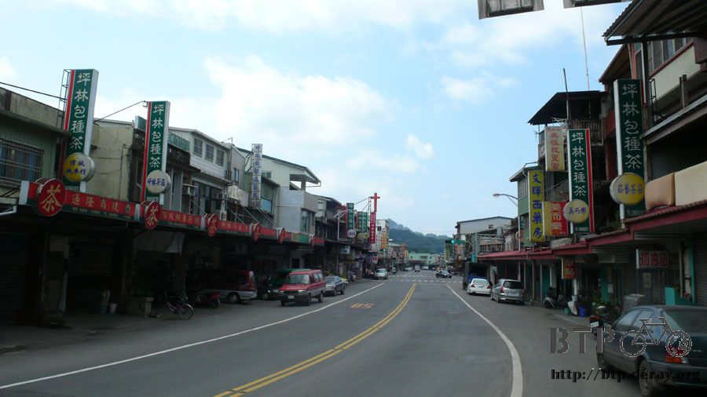
其實這未嘗不是一個轉機，因為坪林長年來都將自己定義成『休息站』，只是台北通往宜蘭的必經之處，大家會在這裡加油、尿尿、吃飯。
而店家也就依照這些需求開店營生，久而久之反而忽略了自生的特色，當雪隧一通車，車流少了，客人也少了。
休息站的模式經營不下去，倒也不是將這個地方判了死刑，這時候反而可以好好的發揮坪林本身的特色，茶葉文化。
重新包裝一個這麼漂亮的地方，讓遊客是『專程』到這邊來玩，而不是『路過』。
接下來的商機，不見得會比身為休息站的那時候還要糟，畢竟坪林距離台北那麼近，又不像南投或是其他縣市連開車大家都嫌遠。
我想只要肯用心的規劃，重新讓坪林有不同的樣貌是指日可待的事情。
好山好水的坪林，這一路騎車環島，好久沒有看到這樣藍色河水的溪流了，美麗的茶葉梯田也是無可取代的地方特色。
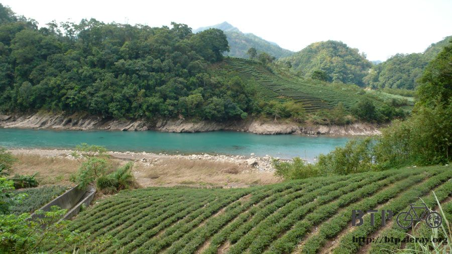
我自己都很懷疑這張照片真的是我拍的嗎？
拍的稍微太好了一點，跟一路上隨手拍的風格不太一樣，看來我一直低估這台相機的性能。
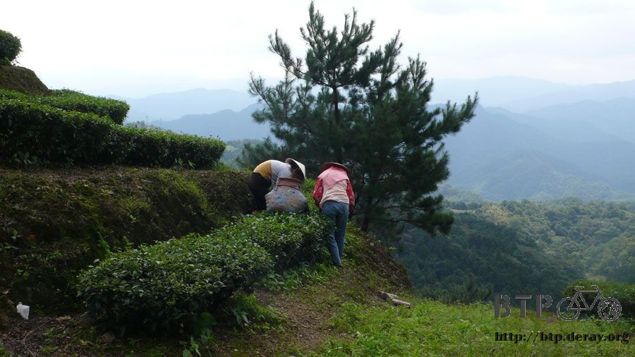
或者說，這台相機拿在我手上，就變成傻瓜機了@@"
離開坪林之後就是上坡，要重新再爬到五百公尺高的地方，還好這次是從中間開始爬，稍微輕鬆一點。
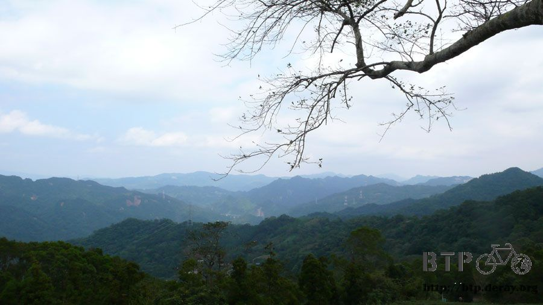
之所以選擇走北宜而不是濱海有幾個原因，東北季風、這樣騎比較近、我比較喜歡北宜，以及北宜對我來說最重要的必經之處。
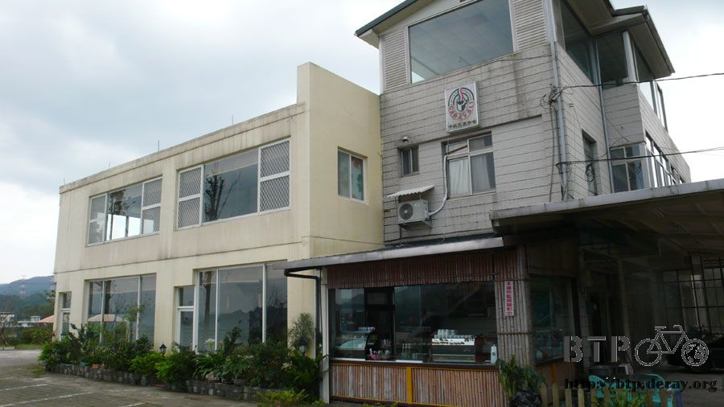
CARAVALI咖啡。
話說第一次到這個咖啡店也是四年前的事情，環島出發的第一天，傻傻的就騎北宜，第一天就快被搞死。
在上坡路段看到這間咖啡店，如獲至寶的想來裝杯免費的水，結果老闆娘請我吃了一堆東西，香蕉、冰沙、披薩。
當時小女兒還是個小不點，現在都已經小一了，時間過的真是好快好快。
重新回到咖啡店，外觀好像有點不一樣，本來露天的座位似乎加蓋成室內，當我正在跟模糊的記憶比對時，才想到...今天該不會沒開吧？
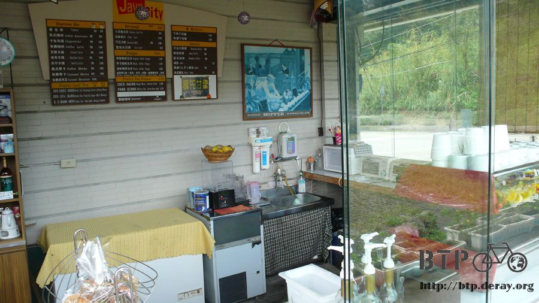
探頭到裡面，真的沒有人呢～但是感覺也不像在休息呀，大聲喊了，有人在嗎～？
老闆娘就出現了，比起記憶中還要年輕的她，讓我懷疑這間店是不是換人經營了，而她是工讀生？
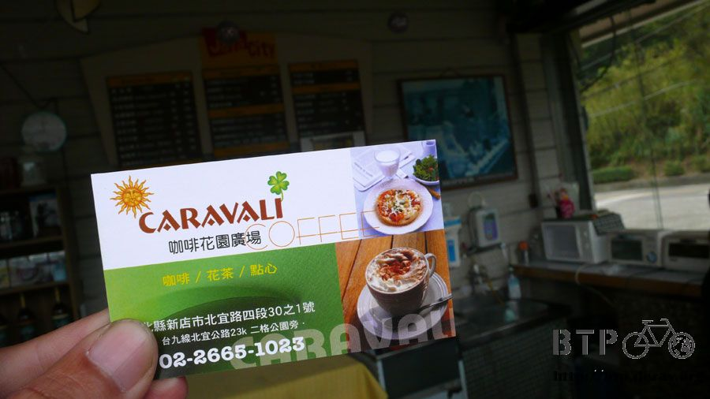
話說記憶真的很不可靠，也許不可靠的只是我的記憶而已，老闆娘可是一眼就認出我來，說我怎麼那麼久沒有來？
我最後一次來是四年前，居然還記得我，讓我有點訝異，同時也確定咖啡店還是跟以前一樣，沒有易主。
雖然趕著回台北，但遇到老朋友還是很開心的坐下來聊天，喝著熱騰騰的卡布奇諾，咖啡變的更好喝了。
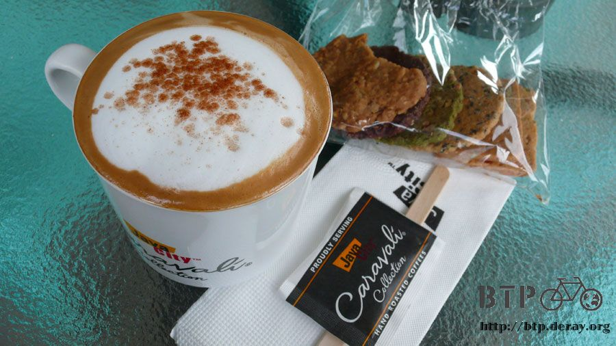
手工餅乾則免費，一包有七片，全都是不一樣的口味。
除了咖啡之外，當然在茶葉聞名的坪林，這邊也是可以泡茶的。
一聊就忘了時間，聊到旅行，聊到四年前我到過這裡之後，接下來這四年我做了些什麼？
環島，當兵，環法，唸書，休學，工作，離職，又跑來騎車，然後回到這裡。
四年的時間，大概三十秒鐘就可以交代完畢，如果不在有限的生命中做些什麼的話。
也許接下來十年甚至二十年的時間，一句話就簡單帶過了，留下的卻是生命中的空白。
整個聊的很忘情，發現的時候已經十二點半，還有一個小時的時間要從北宜殺回新莊，飆車吧～少年
離開咖啡店就是下坡，一股腦的往前衝，一下山馬上從森林變成水泥叢林，這邊是新店。
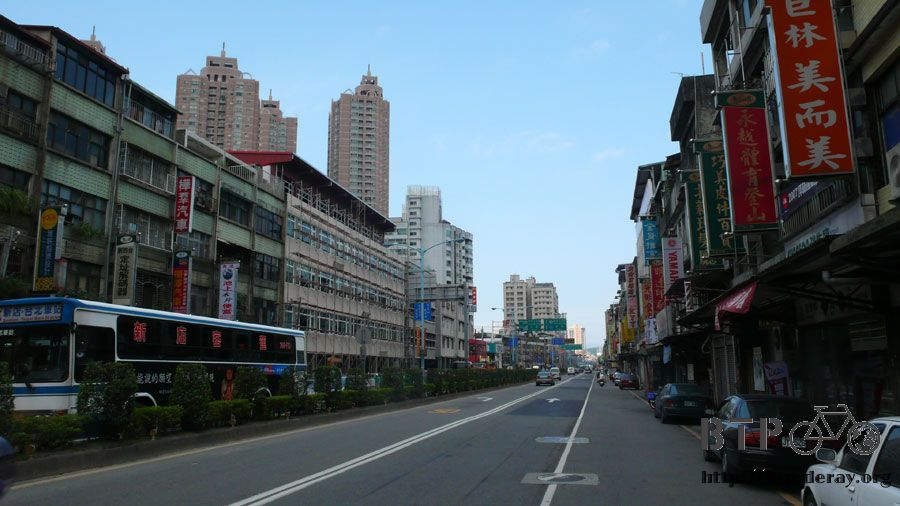
頭也不回的往前一直騎，路線單純的令人窩心，直走就是台北市，對自行車最不友善的都市之一。
準備好要迎接比砂石車更恐怖的挑戰了嗎？
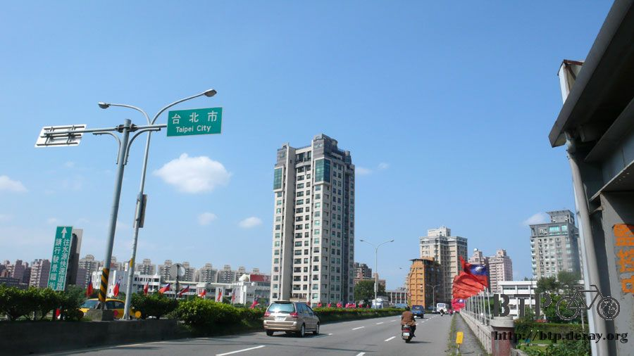
走北宜的好處就是，今天的風依然很大，看那風向是很明顯的東北季風，就是過去幾天一直在折磨我的東西。
躲在山裡面果然一點也感受不到強勁的風勢，下山才開始有感覺，如果今天選擇走濱海的話，現在不知道騎到一半了沒？
國慶過後，橋上的這些旗海還沒有收掉，環島沒帶國旗，就拿現成的合拍一張。
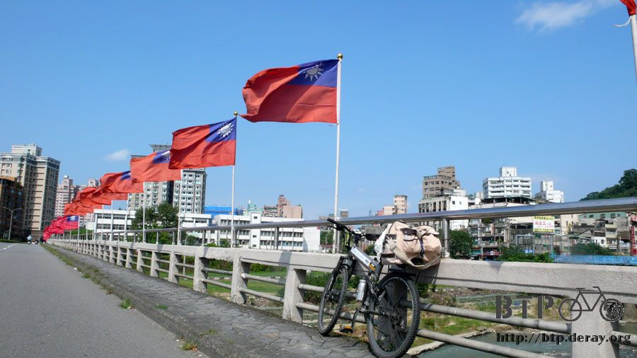
我喜歡這塊土地，上面的人、事、物，都是身為台灣人的驕傲，騎完歐亞大陸，回來環島這一趟，一點也不覺得台灣小到哪裡去。
以不同的路線重新再騎一次，更讓我體認到台灣之美，她那豐富的人文色彩，以及我超愛的美食小吃。
能夠生活並且站在這塊土地上，是這輩子最令人感到得意的事情。
騎進台北市之後，接上羅斯福路，然後就切換成上學的模式，以前唸書會騎單車通勤，這段路線已經熟到不行。
這段上學之路必經總統府，騎著自行車到這裡，只有我一輛，感覺有點寂寞，期待有一天台灣處處都可以是自行車悠遊的環境。
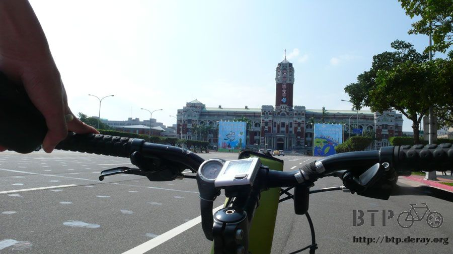
有些話想說，卻又帶有政治的意味，還是就不說了，拍張照片，希望以後騎車進總統府不是衝撞的行為，而是上下班的交通工具。
繼續往RST瘋狂前進，繞過繁華的西門町，爬橋過河，穿越捷運經建中的超爛交通，抵達了這次環島的終點。
因為車子是RST借給我的，所以騎回來還恰如其份，每次都講RST、RST，沒來過的人應該不知道這是什麼地方吧？
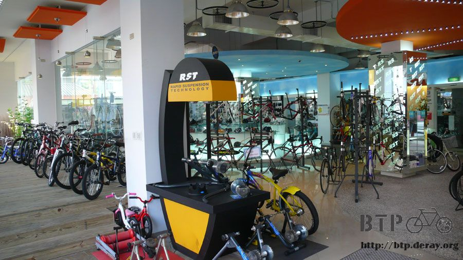
我都會形容RST是一棟兩層樓的自行車百貨公司，第一次來的時候整個被震撼，這根本就是自行車的超級旗艦店，
小多也是在這邊改裝，這次旅行的單車相關裝備全都是RST幫忙處理，可以算是這趟旅行的娘家和基地。
距離這一次看到這樣的場面已經是半年前，今天的媒體朋友比較少，只有以前的十分之一左右，但那陣仗還是讓我雙腿發軟。
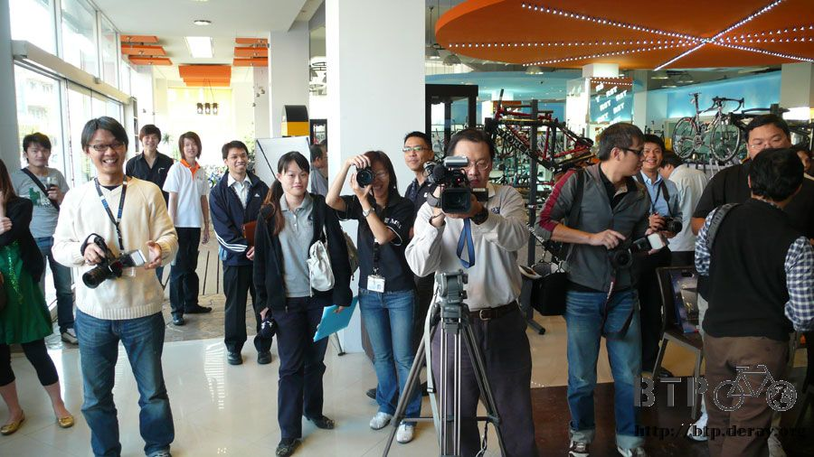
剛從北宜一路狂飆下來，午餐還沒吃，口也很渴，一邊喘氣一邊喝可樂，一邊因為屁股疼痛而只能站著。
回到台灣，並且能夠再環島一圈的感覺真好～
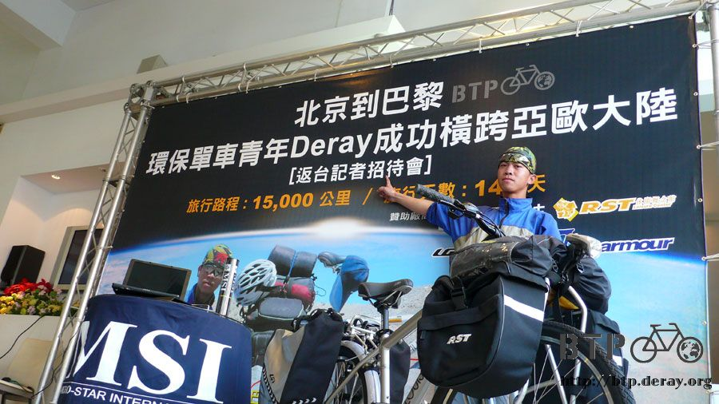
都已經騎完了才會說『真好～』，騎的當下也不是沒有抱怨過啦。
所以啦，現在覺得很苦的事情，只要一直堅持下去，堅持到最後，那麼所有的辛苦會通通轉換成無價的回憶。
可惜的是如果半路就放棄的話，那辛苦就會變成深深的遺憾。
堅持，給自己找一個堅持的理念，越簡單越好，然後緊緊守護著它，用生命去維護著這個理念。
不論想做什麼，都是時間的問題，沒有做不到的事情，只是有沒有跨出勇氣的第一步。
第一步跨出去之後，基本上已經成功了百分之七十，接下來的只有堅持，和一路上的淚水與歡笑。
今天那些飛出去的鴿子，有多少隻為了自由和夢想毅然的飛離安逸的窩呢？
最後祝福所有的人，謝謝大家陪伴著我參與了這次的旅行，在這過去的一百五十五天，給予我無私的協助和支持。
最後，用一句話當結尾。
Let's Bike !